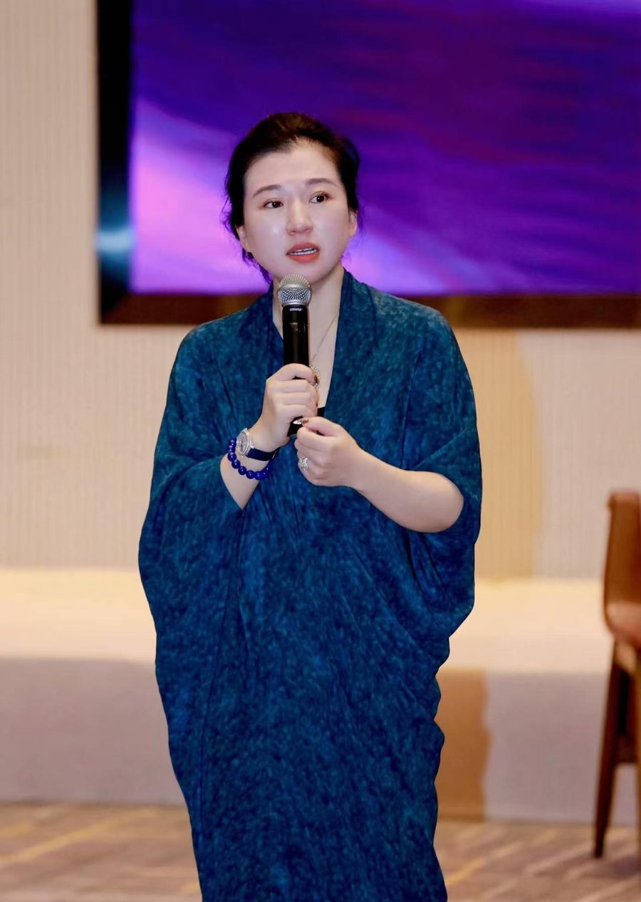

你说「武器库里都是弹药，但没好好整理」，又说「肉都烂在锅里」。听完这 67 分钟，我们的判断是：你不缺内容、不缺交付、不缺信任，缺的是一套把这些持续变成影响力和成交的系统。这正是 AI 现在最擅长的事。

我又不是个卖货的，又不想干个纯卖课的。不好找对标，可能是个优势。
—— 关于定位录口播的时候，对面那个对象感空了，我不确定该对什么人说什么话。
—— 关于短视频后端打得特别夯实，唯独把前端获客这件事弱化掉了。
—— 关于业务我其实真是个获客宝宝，给很多发售型 IP 导过高质感的用户。
—— 关于你的天赋AI 和系统意识，本身也是一件事。
—— 关于 AI我似乎有一个契机把商业做大，但一定不是靠现在的业务模型和团队模型。
—— 关于下一步把这六句话放在一起看：天赋在前端，精力却全压在后端。两位老师交付越来越好，六城六场、270 人进课，后端已经稳了。下一阶段，你个人要从「什么都扛」退半步，让系统替你往前顶。
一个审美很好的剪辑同事两三天出一条片，看上去是产能问题。但你自己点破了根子：不知道在对谁说话。没有清晰的「那个人」，AI 一天剪 20 条也只是更快地散。所以第一刀先下在定位上，产能放在第二位。
做创业的「能量派」交付偏弱，做商业的不懂关系，做关系的不懂商业。你这一年半把关系科学 × 商业打通了，正好卡在中间。AI 越把效率推向极致，判断、取舍、序位这些「人」的部分越稀缺。你一句「AI 和系统意识是一件事」，就是现成的母题：AI 管效率，关系管方向。
一个月六场线下课、三位老师、十几门课、两年的现场录音和学员故事，这些素材够一个账号发一年。缺的是一条录音 → 转写 → 选题 → 剪辑 → 发布 → 复盘的流水线。直播同时承担内容、销售、交付三种角色，是这条流水线最好的源头。
你退出发售体系，是因为它「耗信任和口碑」。所以在你这里，AI 的位置是后台的大脑：帮销售读懂客户、记住每一段关系、在对的时候递上对的案例，而前台始终是真人、真关系。用到你的场景里，就是「AI 在后、人在前」。
你的内容能力和内在系统性已经很强，所以和 AI 对话总觉得多此一举。其实 AI 不该替你思考，它该做的是复制你：让团队、合伙人、学员都能调用「帆姐会怎么判断」。你是源头，AI 是放大器。
前三个已在合作方案里，我们往深挖了一层；后四个是这次对话之外，我们觉得值得一起赌的。
每场线下课默认全程录音录像，课后 24 小时内由 AI 自动产出：金句切片、学员蜕变故事、老师观点短片、朋友圈文案。六城六场课，就是六个内容矿。
她审美好、跟了你两年、知道什么能说什么不能说，这正是 AI 流水线里最贵的那一个人工节点：审选题、审剪辑稿。重复的剪辑交给系统，她的判断力从每周 3 条放大到每天 20 条。
「短视频带不动 599」是经验，但你两场直播就带动了。AI 切片的成本几乎为零，值得用数据回答：开一个独立切片号，按周复盘哪类切片带来私信和成交。
你不想做超低客单获客。可以把序位、平衡、流动做成一份 AI 引导的自测：用户回答 15 个关于家庭和事业的问题，拿到一份像样的个人报告，再由真人顾问解读。筛进来的是愿意花时间审视自己的人，正好是你要的那群高质量用户。
国企中高管在下行周期里没掉下去，做了 30 年香云纱的姐姐，潮汕 40 年美业家族……这些「关系科学 × 主业」的蜕变故事就是最有说服力的内容。用 AI 把每次访谈、课堂分享沉淀进同一张案例表，销售按行业一键匹配，内容按主题一键取材。
交付规格高、固定成本高，最贵的是老师的时间。用两位老师的体系训练一个「关系科学练习伙伴」，课后陪学员做每日觉察、复盘关系卡点，遇到要真人处理的问题再转交老师。学员感受到持续陪伴，复购和转介绍跟着来，老师的时间也省下来了。
你的核心用户里，除了一位外企高管，几乎都还没用上 AI。她们都是有自己主业的一号位：美业、香云纱、国企、家族生意。等你和团队先跑通，你本人就是最好的案例，可以把「关系科学 + AI 工作流」打包给合伙人和核心用户，帮她们在自己的主业里降维打击。你不用去卖更多的课，你让每个合伙人的主业更强，她们无心的分享自然会带回新用户。
明确「那个人」是谁、她的卡点是什么、你给她什么。所有内容从这里长出来。
定位落地成选题库和拍摄，直播恢复节奏，AI 切片接管分发和复盘。
四个负责人和六七个销售不裁人，每个人借 AI 往上下游多做一段。销售聊天记录自动分析意向、推荐升单路径、匹配案例。
你们跑通的内容和销售系统，变成合伙人可以直接用的工具包。能自己带的你带，带不了的我们一起服务。
你说你不想做太快的事。我们也不追求一次把所有流程 AI 化，先挑最痛的一两个点做出正反馈，再一点点铺开。
AI 可以替销售做分析、出建议、起草回复，但在你的品牌里，和客户之间的关系要由真人维护。这是「关系科学」品牌的底线。
AI 带来的是每个人能力的拓展，用不着拿它当裁员的理由。四位负责人都很能打，AI 让他们各自多覆盖一段上下游。
剩下的，是让这些被更多对的人看见。我们一起，把弹药上膛。